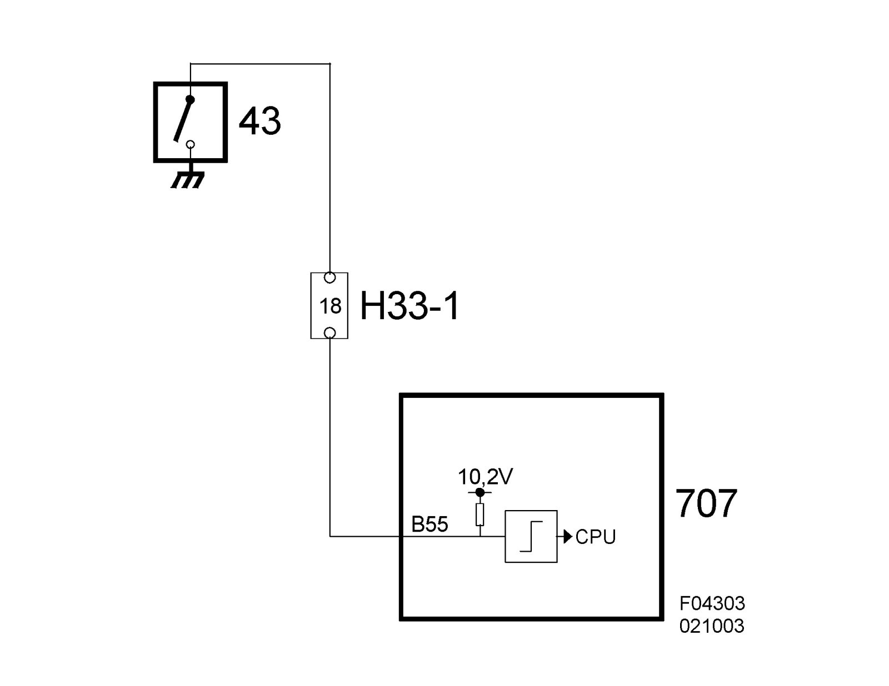

Operation CHARM
: Car repair manuals for everyone.
Home
>>
Saab
>>
2011
>>
9-3 FWD (9440) L4-2.0L Turbo
>>
Repair and Diagnosis
>>
Sensors and Switches
>>
Sensors and Switches - Brakes and Traction Control
>>
Parking Brake Warning Switch
>>
Testing and Inspection
Parking Brake Warning Switch: Testing and Inspection
Handbrake warning lamp, faulty function

Fault symptom
Handbrake warning lamp, faulty function
Conditions
Ignition ON.
Diagnostic help
Test value:
Parking Brake Switch